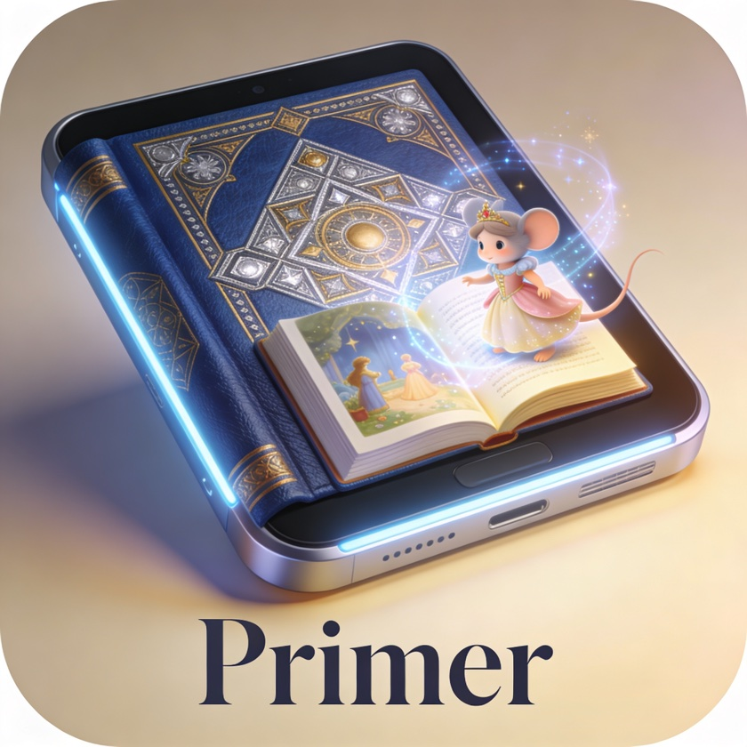

Vision & pedagogy
Teaching by asking
The Primer is built on a simple conviction: children learn most deeply when they construct understanding themselves, guided by good questions — and that a learning companion should serve the child, never the metrics.
The inspiration
In Neal Stephenson's The Diamond Age, the Young Lady's Illustrated Primer is an interactive book that bonds with one girl and raises her: it converses, tells stories that adapt to her life, and teaches her to think rather than to recite. The fictional Primer needed a hidden human actor behind it. Modern language models make the conversational core honestly buildable for the first time — and small enough to run on hardware a family can own outright.
We are not building a tutor app with a mascot. We are building the closest real-world counterpart to that book: one child, one companion, a long conversation that spans years.

The Socratic method, implemented
Every response the Primer gives is chosen by a pedagogical engine that decides — before generating a single word — what the moment calls for: a guiding question, scaffolding, encouragement, a comprehension probe, or a direct answer.
Pure factual questions get a direct answer first, because stonewalling a curious child is not pedagogy. But the answer is always followed by a pivot back into inquiry: "The Moon is 384,000 kilometres away. How long do you think a car would take to drive there?" When a child struggles, the Primer scaffolds — breaking the problem into smaller steps rather than revealing the solution. When a child parrots a phrase confidently, the Primer notices, and asks the kind of question a phrase can't answer.
What the Primer refuses to do
Most educational software is engineered around engagement: streaks, points, badges, notifications, bright reward animations. These mechanisms work — that is the problem. They train children to seek the reward, not the understanding, and they teach products to compete for attention against the child's own curiosity.
The Primer has none of them, permanently and by design. It monitors the conversation for frustration and disengagement, and when it detects them it offers scaffolding, suggests a different topic, proposes a break, or simply says "that's enough for today" — without guilt. After half an hour it gently suggests stretching legs. It never blocks a willing child, and it never hooks a tired one.
Comprehension is verified, not assumed
A confident-sounding answer is not understanding. The Primer probes depth the way a good teacher does: transfer questions ("Can you explain it to someone who's never heard of it?"), application challenges ("What would happen if gravity were twice as strong?"), and contradiction probing ("Someone told me plants eat soil — what would you say to them?").
What the child demonstrates is recorded in a longitudinal learner model — every concept encountered, at what depth it's held, and how it develops over weeks and months. Concepts resurface naturally in conversation at expanding intervals, the way a thoughtful adult circles back to last week's topic. There is no drilling and no quizzing; if a word the child learned last month fits today's conversation, the Primer weaves it in and listens to what comes back.
Why voice-first
Voice is the Primer's primary interface as a pedagogical choice, not a hardware constraint. Conversational speech demands active construction — you cannot skim a conversation the way you skim text — and that effortful processing is exactly what drives deep learning. A voice-only companion also frees the child's body: hands manipulate objects, arms gesture, feet wander, while the mind reasons.
Children who gesture while explaining a concept are significantly more likely to transfer that learning to novel problems (Goldin-Meadow, 2009). A device that pins a child's attention to a screen forfeits that — and displaces the parent-child interaction that remains the most powerful learning environment available.
A screen is available for text, diagrams, and code when a child is older — but it is never required, and for children under roughly eight it is actively undesirable. The Primer should feel like a conversation with a thoughtful adult, not like an app.
A companion, not a product
One child, one device. The learner model — the most intimate educational record imaginable — lives on the device and nowhere else, and leaves only with explicit parental consent. The Primer is designed to work with zero connectivity, because a child's access to learning should not depend on a subscription, a server, or a company's continued existence.